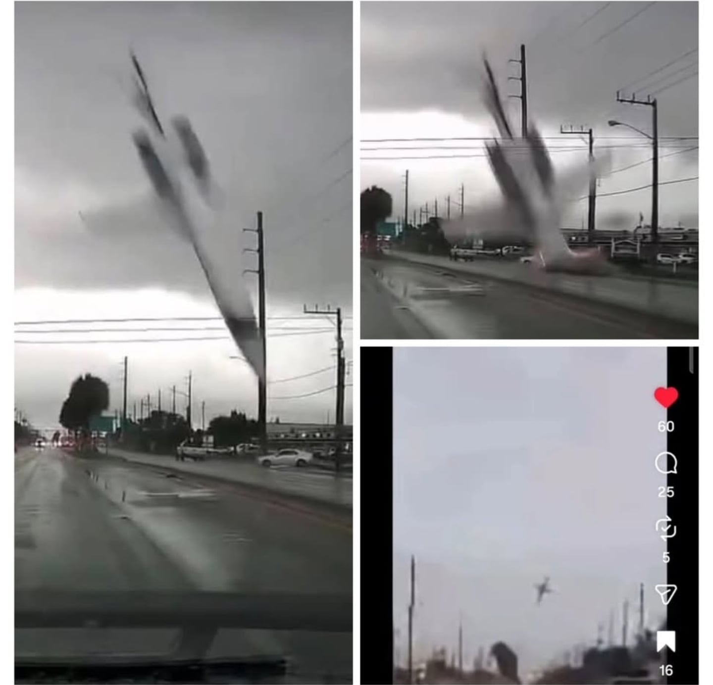
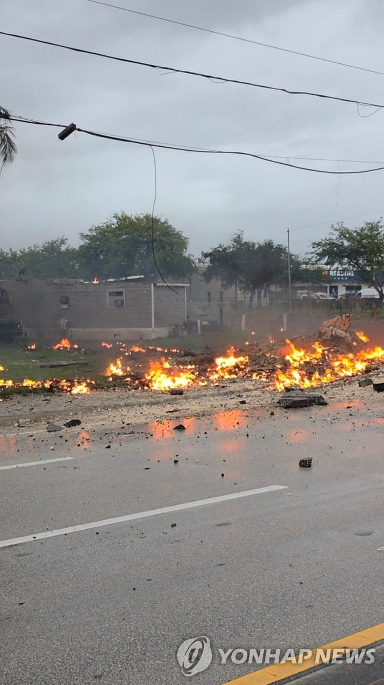

무슨 미사일떨어지는 소리가
미사일이랑 다를게없지않나
허미시펄
저정도 속도면 낙하산으로 탈출하려는 시도도 못하겠네..
드디어 원숭이 벗어났다
1분에 8000m면 걍 수직으로 꽂은건가 ㄷㄷ
이정도면 충돌 전에 다 기절해있었겠네 ㅎㄷㄷ
으아 무섭다
10인승 제트기가 6톤정도 된다하니 대충 계산하면 충돌직전의 속도는 650~700km쯤 나옴.
기사 사진 보니 저 하얀차는 무사했나보네 영상만 보고 같이 휘말린 거 아닌가 싶었는데 ㄷㄷ
추락하기전 사진 T테일 박살나있네 ㄷㄷ
정비불량이나 부품불량/노화가 원인일 수 있겠네...
제트기면 돈많은사람아니가
제트기 조종사들 돈많이 받긴하지
돈많은 사람들만 타고 다니는거 아님?? 돈많은 사람들이 오히려 더 위험하네..
노머고 새끼가 뒤졌어야 했는데 엄한 사람이 희생됐네
ㅠㅠ
어우...미사일처럼 꽂히네
비행기 잔해는 이미 수거해간거야 아니면 압축이 된거야...? ㄷㄷㄷ 잔해가 보이질 않네 개무섭다
ㄹㅇ잔해 다 어디갔냐
아마 구덩이 속에 많이 있을거 같은데, 지금 구덩이가 물로 차 있네
예전에 중국동뭐시기 항공에서 산에 수직으로 추락했던 사고있는데 현장사진보면 잔해자체가 안보이더라
여객기도 그냥 가루가 되버리더라고
비행기 동체는 보통 알루미늄으로 만드는데
저렇게 수직으로 추락하면 동체는 그냥 뭐 다 박살나고 타버리고
부품 중에 엔진팬 같은 강한것만 형체가 남음
전용 제트기면 웬만한 부자아니면 못타는거 아님? 누구냐
한때 G6 타보는게 소원이었는데...
빈 비행기로 가는 구간은 조금 더 저렴하기도 하고
외국엔 어디까지 가는거 같이 가실? 해가지고 파티원 모으는 것 마냥 사람 모아서 가는 경우도 있음
서울-도쿄 편도가 2천 정도 할거임
Like a g6
무슨 미사일처럼 떨어지네 근데 저러면 블랙박스는 살아있을려나..
ㅁㅊ 뭔 미사일처럼 꽂혀버리지
아이언맨도 죽겠노
영상으로 보면 뭐 보이지도 않네 ㄷㄷ
와... ㅆ벌.... 그냥 미사일 폭격아님? ㄷㄷ
지상 피해자는 없는 건가? 진짜 대참사 될 뻔 했네
진짜 저거맞고죽으면 존나 어이없게죽는거엿는데 다행히 땅에만 박앗나보네
탄사람들 죽는다는 느낌도 못받았겠네 와;
예전에도 비지니스 제트기 중 1대가 거의 저 각도로 추락한 사고 있을건데 어린이 환자이송 중에.,
콩코드? 그런건가
흔적도없네 ㄷㄷ
비행기가 단 2프레임만에 사라짐 ㄷㄷ..
머리 위아래로 조정할 수 있게 해주는 엘리베이터가 아예 없네 사진보니까
저게 비행중에 날아가서 그냥 밑으로 꼬라박히게 된듯...
https://youtu.be/v5dfFoZ_fuQ?si=fjKURPckGnGpOAn2
사고 당시 관제 녹음본인데 진짜 무섭다..
패닉온 조종사 목소리랑 비명소리 있으니 심약자는 주의바람
ㄷㄷ